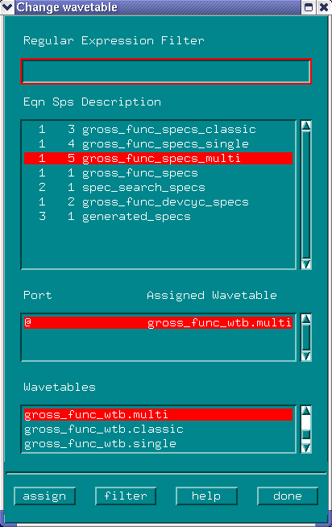

Assigning the Specification Set to Another Wavetable
- Click Change Wavetable in the
Change menu.
A screen similar to that of the figure below appears.

- Highlight the specification you want to assign to a different wavetable.
- Highlight a wavetable from the Wavetables list.
- Click assign.
- Repeat these last steps as often as required (for other specification sets), and click done when finished.
Functional changes
- Introduced before SmarTest 6.3.2